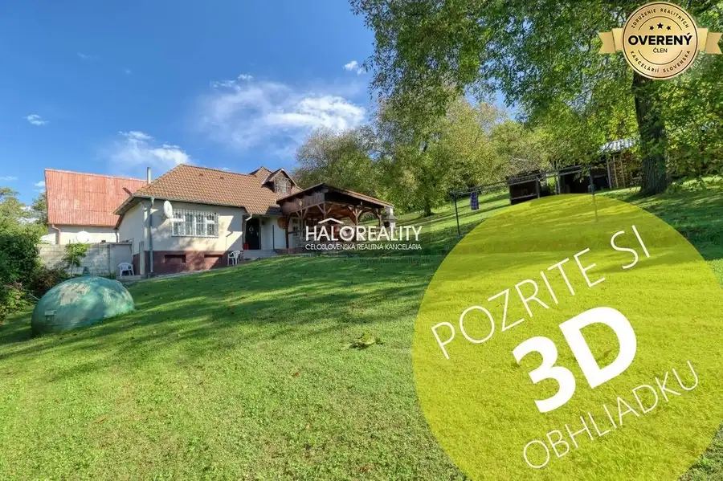
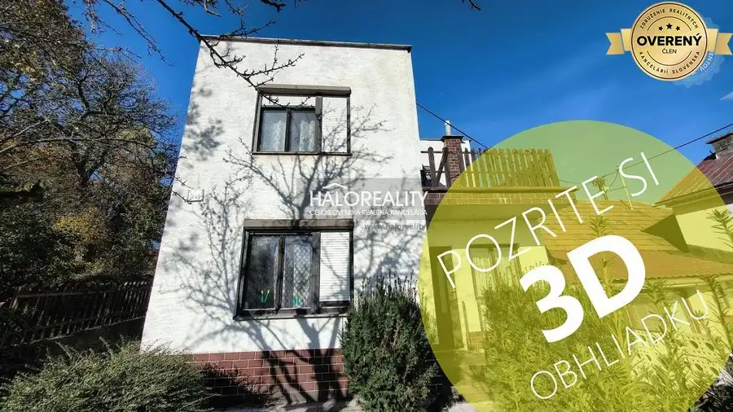
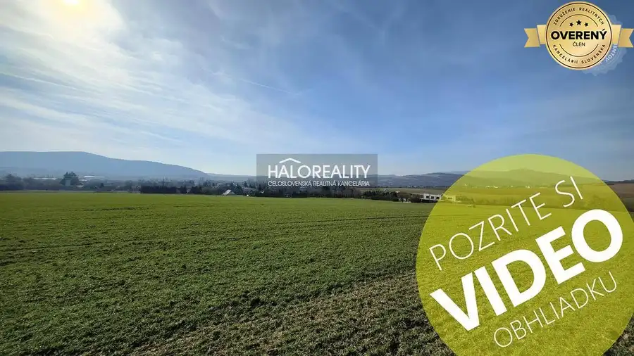
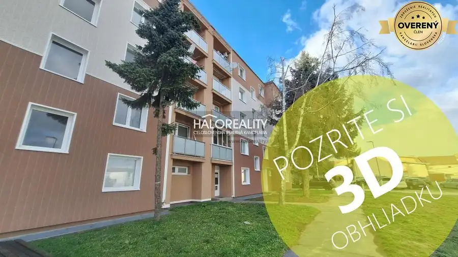
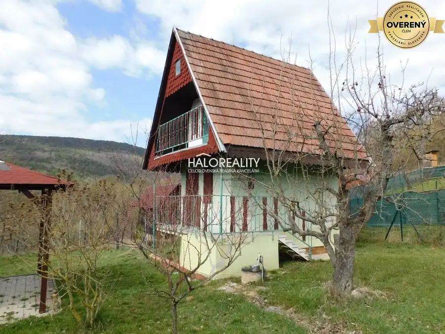
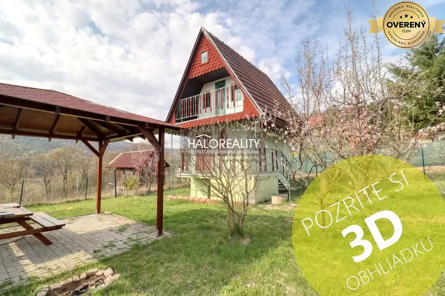
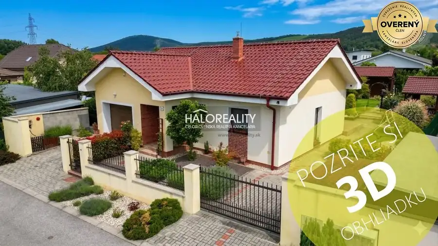
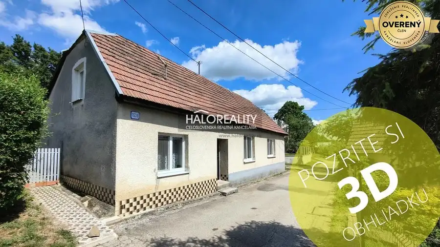

Aktuálna ponuka
Nehnuteľnosti, ktoré ponúkam
8 nehnuteľností na predaj a prenájom. Vyberte typ, alebo napíšte lokalitu.
8 z 8 ponúk

Chaty a chalupy9 126 490 €Predaj, chalupa Nová Bošáca, osada Predpoloma - ZNÍŽ... Nová Bošáca 4-izbový130 m² Ponúkame na predaj nádhernú chalupu s veľkou záhradou, pekným výhľadom, obklopenú prírodou, ktorá sa nachádza na polosamote v obci Nová Bošáca, osada…
Rodinné domy9 53 000 €Predaj, rodinný dom Lubina, Podkozince - ZNÍŽENÁ CEN... Lubina 5-izbový104 m² Ponúkame na predaj starší rodinný dom v pôvodnom stave nachádzajúci v obci Lubina, časť Podkozince DISPOZÍCIA: Dom je dvojpodlažný, nepodpivničený.…
Pozemok9 104 405 €Predaj, pozemok pre rodinný dom 2983 m2 Dolné Srni... Dolné Srnie 2983 m² Ponúkame na predaj nádherný veľký pozemok určený na výstavbu rodinných domov nachádzajúci sa na okraji obce Dolné Srnie. LOKALITA: Obec Dolné Srnie,…
Nebytové priestory9 115 000 €Predaj, administratívny priestor Vrbové - družstevný Vrbové 137 m² Ponúkame na predaj veľký nebytový priestor nachádzajúci sa na prízemí štvorposchodového bytového domu v meste Vrbové, situovaný veľmi blízko centra.…
Záhrady9 37 999 €Predaj, záhradná chata Čachtice, Hliník - ZNÍŽENÁ CE... Čachtice 2-izbový1 m² Ponúkame na predaj záhradnú chatku v osobnom vlastníctve, v chatovej osade ZO Hliník 1 v Čachticiach, neďaleko Nového Mesta nad Váhom, diaľnica 10…
Záhrady9 36 500 €Predaj, záhradná chata Čachtice, ZO Hliník 1 - ZNÍŽE... Čachtice 2-izbový38 m² Ponúkame na predaj záhradnú chatku nachádzajúcu sa v záhradkárskej osade ZO Hliník 1 v Čachticiach. DISPOZÍCIA: Chatka je podpivničená a…
Rodinné domy9 288 500 €Predaj, rodinný dom Hôrka nad Váhom, Na brehoch - NO... Hôrka nad Váhom 3-izbový111 m² Ponúkame krásny rodinný dom typu bungalov s garážou a upravenou záhradou, ktorý sa nachádza v obci Hôrka nad Váhom. DISPOZÍCIA: Dom je jednopodlažný,…
Rodinné domy9 44 700 €Predaj, rodinný dom Bzince pod Javorinou, Hrubá Stra... Bzince pod Javorinou 2-izbový Ponúkame na na predaj rodinný dom - chalupu v pôvodnom no dobrom stave, nachádzajúcu sa na Hrubej Strane, časť obce Bzince pod Javorinou. DISPOZÍCIA:…Tomuto výberu zatiaľ nezodpovedá žiadna ponuka. Napíšte mi, čo hľadáte.